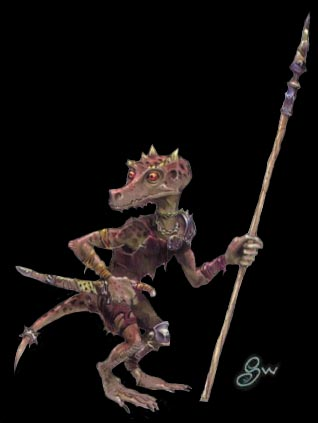
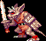
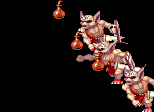
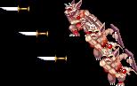

| 고블린 | | | 놀 | | | 코볼트 | | | 아울베어 |
| 스켈레톤 | | | 구울 | | | 자이언트 스콜피온 | | | 자이언트 비틀 |
| 트로글로다이트 | | | 헬 하운드 | | | 셰도우 엘프 | | | 가고일 |
Kobold
|  | 이 생물들은 놈이나 하플링과 체격이 비슷하다. 비늘이 덮혀 있는 가죽에 쥐의 그것과 비슷한 꼬리, 그리고 뿔이 두개가 나 있는 개와 비슷한 머리를 하고 있다. 룰 상에서의 묘사 코볼드는 작은 파충류의 잡식성 인간형 생물이다. 비열하고 새디스틱한 경향을 가지고 있다. 2~2.5피트의 키에 35~45파운드의 몸무게가 나간다. 비늘이 덮힌 피부는 빛바랜 어두운 갈색에서 검은색을 띄며 눈은 타는 듯한 붉은색 이다. 코볼드들은 대부분의 시간을 그들의 소굴 주변에 트랩을 설치하거나 경보장치를 만드는 등 방비를 강화하는데 보낸다. 다른 인간형 생물들과 사이가 안좋은데 특히 놈과 스프라이트(sprite-요정의 일종)을 아주 싫어한다. 언어는 드라코닉(Draconic)을 쓰는데 목소리는 마치 개가 짖는 소리처럼 들린다. (이들이 선호하는 클래스는 소서러라고 한다.) |
| 평균 HP | 44 - 베수비아 강(3-B) / 50 - 절망의 숲(5-A), 아인슨 마을(5-B) / 80 - 그 이후 | |||
| 격파시 획득 XP | 200 | |||
| 등장 스테이지 | 베수비아 강(3-B) / 절망의 숲(5-A), 아인슨 마을(5-B) ~ 떡갈나무 요새(6) / 미로의 숲(8-A) / 게이트 웨이(10-1) ~ 오버츄어(10-2) |
|||
| 드랍 가능한 아이템 | 1sp x 1 ~ 1sp x 2 (1~2sp) | |||
| 스틸 가능한 아이템 |
|
|||
|  |
여러모로 고블린과 비슷한 몬스터다. 그러나 고블린에 비해 모든 움직임이 느리기 때문에 상대하기 쉬우며 점수(xp)가 낮고 아이템도 얻을게 없어서 싸워도 이득이 별로 없다. 다만 시프의 경우 픽 포켓으로 단검을 얻어서 2000xp씩 먹을 수 있고 은단검을 얻어서 보스전에도 이용이 가능하기 때문에 시프라면 열심히 털어 볼 만한 상대다. |
등장 방식
4마리가 동시에 위나 아래서 뛰쳐 나오거나 3마리가 좌/우측에서 차례로 뛰쳐 나온다.
간혹 한 구석에 옹기종기 모여 앉아 있기도 한다.
움직임의 패턴
고블린과 비슷하지만 이녀석들은 뭐든지 행동이 한박자씩 느리다. 전부 눈으로 보고 대처가 가능 할 정도.
심지어는 쓰려졌다가 일어날 때도 느리며 피격 판정도 느리게 회복된다.
공격 패턴
| 스테이지 | 베수비아강(3-B) 전반부 | 베수비아강(3-B) 후반부 ~ 절망의 숲(5-A) |
아인슨 마을(5-B) | 그 이후 |
| 무기,단검 데미지 | 9 / 15 | 14 / 21 | 9 / 15 | 15 / 23 |
| 오일 데미지 | 9 / 15 | 12 / 18 | 9 / 15 | 15 / 23 |
※ 붉은색은 파이터가 입는 데미지, 푸른색은 매직 유저가 입는 데미지.
클레릭/드워프는 파이터에 가까운 데미지를, 시프/엘프는 매직 유저에 가까운 데미지를 입는다.
| 근접 공격 1 무기로 푹 찌르는 공격이다. 준비동작이 뻔히 보이며 발동도 느리기 때문에 아주 쉽게 피할 수 있다. |
|
| 근접 공격 2 몸을 내뻗어서 세로배기를 하는 공격. 근접 공격1 보다는 리치가 조금 더 길지만 발동은 더 느리다. |
|
| 점프 공격 발동이 느린 점프공격...일부러 맞아주기도 쉽지 않다. 다만 가끔씩 뒤로 점프하면서 공격하는 경우도 있다. 무심코 접근했다가는 당할 수도 있다. |
|
| 오일 투척 고블린과 마찬가지로 오일이 닿는 사정거리에 있을 경우 날아오는 공격. 워낙 느리기 때문에 신경쓰지 않아도 될 정도. |
|
| 단검 투척 그나마 코볼드에게서 가장 주의해야 할 공격이라면 이 공격일 것이다. 그러나 역시 모션이 느리기 때문에 피하기는 어렵지 않다. |
|
지원 사격
화면의 좌우측 끝에서 3마리씩 나타나서 오일이나 단검으로 지원 사격을 하고 도망간다.
|  | 오일 투척 정해진 타이밍에 날아오기 때문에 일반 오일 투척보다 훨씬 피하기 쉽다. |
|  | 단검 투척 전 게임을 통틀어서 딱 한 군데서 나오는 공격이다 (스테이지 5-B). |
참고사항
키가 작아서 공중에 뜨지 않았다면 파이터/매직 유저/엘프의 단검류/화살류, 시프의 화살류는 명중 시킬 수 없다.
고블린과 마찬가지로 매직 미사일을 제외한 모든 주문 공격의 일격에 죽는다.
대처법/주의점
연타가 잘 안들어가는 경향이 있다. 예를 들면 드워프의 A공격이 2타 3히트만 먹힌다.
또한 드워프의 대쉬공격을 맞으면 꽤 한참 후에야 후속 공격이 먹히기도 한다.
콤보를 시도할 때 약간은 염두 해 두는게 좋다.
은근히 가드를 잘하는데 드워프는 슬래쉬 시도시 조심할 필요가 있다.